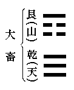

一
歳月流るるが如く、明治天皇の後登遐後、早一年を經た。去る者は日に疎しといふが、千古の大英主たる明治天皇の御鴻徳のみは、深く我が國民の腦裡に印して、決して忘るることが出來ぬのみか、却つて時を經る儘に、愈
 景仰の念を増すばかりである。私は茲に明治天皇の御一週年祭に際し、東洋史上より觀たる明治時代の發展を述べて、聊かその御鴻徳の一端を偲びたいと思ふ。
景仰の念を増すばかりである。私は茲に明治天皇の御一週年祭に際し、東洋史上より觀たる明治時代の發展を述べて、聊かその御鴻徳の一端を偲びたいと思ふ。一體わが日本國は神武天皇御即位以來、二千五百餘年の長い歴史をもつて居るが、その割合に歴史の内容は豐富とはいへぬ。神功皇后の三韓御征服とか、豐太閤の朝鮮征伐とかいふ、大陸發展の場合が甚だ尠い。さらばとて平和の方面を觀ると、一層寂寞たるものがある。制度・文物・學術・宗教等あらゆる文化は、支那より傳はり、若くは支那を經て、我が國に傳はつたもので、その反對に日本固有の文化、若くは他國の文化でも日本を經て、支那・朝鮮の大陸に傳はつたといふ場合は、殆ど見當らぬ。要するに明治以前に於ける、我が二千五百餘年の長き歴史を振り返つて見ても、戰爭の場合といはず、平和の場合といはず、我が日本が原動力となつて、支那や朝鮮の局面に大變化を來したといふ場合は、極めて稀有である。所が明治の御世となると、頗るその趣を異にして居る。明治の御世殊に日清戰役後の十七八年の間に、わが國は非常なる發展を遂げた。この間に東亞の方面に起つた大事件は、一として直接若くは間接に、我が日本國の發展の影響を被らぬものはない。是點より考察すると、明治以前の二千五百餘年の歴史より、明治の御世、殊に最近十七八年間の歴史の方が、遙に内容豐富ともいへる。
明治年間に於ける我が國の發展は、多方面に渉つて居るが、東洋史の立場から觀ると、大要左の五項に概括し得ることと思ふ。
二 朝鮮の併合
朝鮮は過去に於て、我が國と隨分深い關係があつた。殊に神功皇后の御世から、欽明天皇の御世にかけて、三四百年間は、我が國の勢力の下に立つたこともあるが、併し大體上支那の保護國といふ有樣であつた。朝鮮といへば、直に事大思想を連想する。事大とは『左傳』の大不レ字レ小、小不レ事レ大（哀公七年）や、『孟子』の以レ小事レ大者畏レ天者也、畏レ天者保二其國一（梁惠王下）から出た文句であるが、朝鮮人は昔から、尠くとも高麗時代から、大國の支那に服事するを以て天則を奉ずるものと心得て居つたのである。所が明治二十七八年の日清戰役の結果、支那は始めて朝鮮から手を引くこととなり、續いて日露戰役で、日清戰役後一時朝鮮に勢力を振うた露國も手を引き、かくて朝鮮は完全に我が國の保護の下に立つこととなり、遂に明治四十三年の併合といふ運命に歸したのである。日本は隨分古くから朝鮮と關係があつたといふ條、その勢力は寧ろ微々たるものであつた。神功皇后御征韓後と雖ども、その勢力は廣さに於ても深さに於ても、勿論明治の御世のそれに比すべくもなかつた。要するに朝鮮の併合は、國史あつて以來の偉業で、東洋史の上からいうても、尤も注意すべき大事件の一つと數へねばならぬ。
三 東亞の霸國
過去幾千年の間、支那は東亞の霸國であつた。東亞諸國の間に在つては、習慣上支那の君主のみが獨り皇帝と稱して、自餘の君主はこの稱號を遠慮した。彼等は皆一等下つた王といふ稱號に滿足して、支那の皇帝から封册を受くるを以て名譽として居つた。勿論我が日本のみはその例外であつた。愛國心強く、國權擁護の念厚き日本人は、常に支那に對して同等の位置を要求した。推古天皇の御世、初めて日本の朝廷から隋へ國書を差出した時にも、日出處天子、致二書日沒處天子一とか、東天皇敬白二西皇帝一とか、對等の文句を用ゐて居る。されど支那の方では、殆どすべての場合に於て、日本に對して同等の待遇を與へなんだ。支那と日本と長い通交の割合に、彼此往復した國際文書の多くなかつたのは、かかる障碍があつた結果とも見るべきである。歐米諸國と交通が開けてから、第三者たる彼等も、矢張り支那と日本との待遇に就いて、多少區別を設けて居つた。
所が日清戰役を界として、日本の位置が高く、その反對に支那の位置が低くなつた。下關條約によつて、二國間の條約は改正せられ、支那は日本に對して、歐米諸國同樣の待遇を與へることとなつた。即ち不對等條約を結ぶこととなつた。第三者たる歐米諸國も亦、次第に日本を支那以上に待遇することとなつた。過去幾千年間、東亞の霸國であつた支那は、茲にその位置を日本に讓ることとなつたのである。これも東洋史上より觀て、稀有の大事變といはねばならぬ。
四 世界の一等國
日清戰役によつて、東亞の霸者となつた我が國は、日露戰役によつて、更に世界の一等國に列することとなつた。過去に於てあらゆる世界の問題は、歐米列強のみによつて決定された。東亞問題に就いても、日本や支那は、殆ど何等の發言權を有することも出來ず、すべて英露諸國の意志の儘に決定されたのである。日清戰役によつて、我が國の位置の高まつたといふ條、これは東亞諸國に對してのこと、三國干渉の發頭人なる露國が、わが國の遼東還附後三年ならざるに、厚顏にも支那に迫つて旅順・大連を租借した時、わが國からは抗議すらなし得なかつたのである。明治三十五年に結ばれた日英同盟によつて、我が國の位置の高さを加へたことは申す迄もない。世界の大國で、しかも久しく名譽の孤立を守つて居つた英國が、異人種異宗教の日本と同盟を結んだことは、隨分當時の世間を驚かしたものである。これは勿論我國にそれだけの實力あつたからではあるが、率先してその實力を認めてくれた英國の好意は、十分感謝すべきことと思ふ。
日露戰役後は、英國以外の列強も、流石に日本の實力を度外視する譯にはいかぬ。東アジアに領土を有する大強國は、何れも日本と好意を通じ、各自の植民地又は領土の安全を圖ることとなつた。かくて日佛協約（四十年六月）、日露協約（四十年七月）、日米覺書（四十一年十一月）が、相前後して締結された。これは我が國を除外しては、東亞の平和の保障の出來ぬ證據で、現在及び將來列強の活動舞臺たるべき太平洋方面では、日本國の發言權が最も尊重されることとなつた。從つて世界の國際上でも、一等國の待遇を受けることとなつた。有色人種で、國際上白人種の大國と同一の待遇を受くることは、勿論過去の世界の歴史に於ても、稀有の事實である。
五 文化の輸出
我が國が支那と通交して以來、支那の文化を輸入するのみで、一度も日本から支那へ文化を輸出したことがない。所が日清戰役後は、この天荒を破つて、あらゆる文化が日本から支那へ輸出されることとなつた。
漢字すら日本から逆輸入した方が歡迎される。團體・代表・膨脹・舞臺・社會・組織・機關・犧牲・影響・報告・困難・目的・運動等の文字は、支那の新聞や雜誌に普通に散見するが、此等の熟字は何れも日清戰役後に、日本から輸入されたものである。保守的な支那人は、かかる雅馴ならざる熟字を排斥せんと計畫したこともあるが、すべて無效であつた。支那人の中には更に進んで、株式とか手續とか、組合とか取締とか黒幕などいふ、恐れ入つた熟字迄も使用する者がある。此等の所謂新名詞は、最初日本から歸つた留學生などが輸入したのであらうが、當世振る支那人は、頻に之を歡迎して、新知識顏をするのである。近頃出來た新字典などには、從來支那では曾て使用されたことのない、日本の漢字までも網羅して居る。
支那の御國自慢には必ず出て來る孔子、その孔子を尊崇することすら、日本の影響で、日本維新の鴻業は儒教に負ふ所が多い。故に日本は盛に孔子の學を講じて居る。日本の強大にならはんには、必ず孔子の學を尊ばざるべからずといふのが、心ある支那人の意見であつた。そこで明治三十九年に、從來中祀とて、二等祭祀の待遇を受けて居つた孔子の祭典を、急に大祀に昇格させ、天地・宗廟と同等の待遇をすることとなつた。
ずつと變つた方面では、日本から大和魂まで輸入して居る。日本が往古盛に支那の文明を輸入した時代でも、和魂漢才とて、國魂だけは決して支那の厄介にならなかつたが、支那ではその國魂までも日本から輸入して居る。支那の先覺者の中には、日本の強大なるは大和魂の御蔭である。中國の衰弱不振は中國魂なきによる。中國今日の急務は中國魂を製造するに在ると絶叫した者もある。國魂といふ文字も、勿論日本から輸入した新名詞である。
六 アジア人の覺醒
我が國の發展が世界に及ぼした影響の尤も顯著なるものの一つは、アジア人の覺醒を促したことである。一體この三百餘年間は、白人種の得意跋扈時代であつた。彼等は到る處に占領地を作り、殖民地を建て、全世界を擧げて彼等の勢力の下に置き、白人種にあらざれば、殆ど人間にあらずといふ有樣を呈した。アジアの如きも、印度・ビルマは英國に、シベリア・中央アジアは露國に、後印度の大部は佛國の手に落ち、餘す所の支那やペルシアやシャム等も、白人種の壓迫に苦しんで居る。唯一の例外たる我が日本と雖ども、全くはその壓迫から離脱し得なかつたのである。
アジア人も白人の壓迫に對して、萬斛の不平を抱いて居るが、然し彼等は到底白人には抵抗不可能と信じて、その自然の運命に服從いたし、白人は又劣等と信ぜるアジアの黄人種を支配するのは、その當然の權利の如く心得て居つた。かかる事情の下に、僅少なる白人が、多數の黄人を容易に統治して行くことが出來たのである。所が日露戰爭は從來のレコードを破つた。日露兩國は種々なる點に於て、奇妙なる對照を有して居る。從つてその戰役の結果は、種々なる方面に影響を及ぼして居るが、中に就いて、アジアの一小國が、その幾十倍もある白人の大強國――數ある白人の強國の中でも尤も跋扈を極めた大強國――と戰ひ、見事之を打ち破つて、兜を脱がしめたといふ事實は、全アジア人に餘程深刻なる印象を與へた。黄人も努力如何によつては、隨分白人の壓迫を脱することが出來る。否更に一歩を進め、白人に對して痛快なる復讐をも成し遂げ得らるるといふ、實例を目前に示されたのである。
日露戰役の數年前から、活動寫眞が次第に世間に持て囃されて來た。日露戰役はこの活動寫眞にとつて、好箇の映寫物となつた。日露戰役の當時から、爾後三四年間は、この戰役の活動寫眞が、アジア大陸到る處で空前の歡迎を受けた。印度人・ビルマ人・シャム人・安南人・支那人・南洋人等は、何れもこの活動寫眞――實際以上に露軍敗亡の有樣を映寫してある――を見物して、數十百年來の溜飮を下げた。活動寫眞によつて、不樣な露軍の敗走を見ると、自然彼等の腦裡に、白人の威光が薄らいで行く。白人も不可敵でないと知ると、之に對する反抗心が頭を擡げて來る。かくて汎アジア主義が、次第に東洋の天地に彌蔓して來た。
英人の管下にある印度人の獨立思想も、この時から一層熱列を加へ、英人も之を抑壓するに頗る困難を感じた。そこで日英同盟によつて、日本の勃興を助けた英國の政策は、果して英人の利益であつたであらうかと、同盟の價値に就いて疑惑を挾む者も出來た程である。佛領後印度にも、同樣不安の状態が起つた。フランスがこの地方を占領して以來、日露戰役直後ほど、安南人の人氣の荒立つたことはないと傳へられて居る。
このアジア人のアジアといふ思想の勃興には、アジアに領土を持つて居る白人一同に閉口した。彼等は日本人がやがて黄人種の先達となり、黄人種の大同團結を作つて、白人驅逐を試みるであらう。多數の黄人に少數の白人では、その結果恐るべきものがある。過去に於て白人が黄人に壓迫征服された場合が多い。かかる時代が或は再出するかも知れぬとて、今迄見縊り過ぎた反動で、實際以上に黄人に對して警戒を加へることとなつた。
アジア人の中でも、支那人が一番覺醒して來たかの如く思はれた。日清戰役後支那人の間に、變法自強といふ新機運が開けて、事毎に日本を模範とすることとなつたといふ條、彼等は未だ十分に日本の實力を理會せなんだ。日本は東洋でこそ強國であるが、世界の舞臺に出ては、とても歐米列強と肩を並べられぬもの、まして露國に對しては、足許へも寄られぬものと信じて居つた。所が日露戰役で、日本が彼等支那人の間に、世界第一の強國と確信されて居つた露國を打ち倒したのであるから、彼等は今更ながら、日本の國力の強大なるに驚嘆し、愈
變法自強の急務なることを自覺した。日露戰役後に於ける支那の革新は、隨分目覺しいものであつた。日本は立憲國で勝ち、露國は專制國で負けた。中國も日本の如く立憲制を採らねばならぬとて、やがて立憲の準備にかかる。日本は國民一致して勝ち、露國は國民雜多にして一致を缺きし故敗れた。中國も滿・漢の區別を撤廢せなければならぬとて、やがて均平滿漢の上諭――滿漢の區別を撤廢せんとする試は、日露戰役前から幾分行はれて居つたが――が發布された。其他學校教育の普及とか、新式陸軍の増加とか、すべて此等の革新的計畫は頗る大袈裟で、然も直間接に多く日本人の補助を受けたのであるから、尠からず歐米人の耳目を聳かさせた。彼等はアジア人の覺醒を重大視する餘り、盛に黄禍論を唱へ出した。黄禍論は勿論日露戰役以前から、已に白人間に唱道されて居つた。黄禍といふ文字も、日清戰役の頃から使用されてをつた。日清戰役の終期、三國干渉の起らんとする前後に、ドイツのカイゼルからロシアのツアールに贈つた一幅の寓意畫――東洋の佛教國の前進を、耶蘇教國が一致して防禦せんとする――の標題が黄禍であつた。この時以來黄禍といふ文字は、盛に使用されることとなつたが、實際の處當時日本は三國干渉の爲に大頓挫を受けて居る。支那は日清戰役の敗亡に續いて、列強から要害の地を租借せられ、或は擧國瓜分の厄に罹らんとする形勢であつた。黄禍といふ文字こそ新聞・雜誌又は書物に疊見すれ、當時眞面目に黄禍の實現を信じた人は、甚だ多くなかつた樣である。黄禍論は畢竟一種の杞憂に過ぎずと見做されて居つた。所が明治三十七八年の日露戰役後から、黄禍論は始めて世界的問題となり、歐米人も眞面目にこの論に耳を傾くることとなつた。
等しく黄禍論といふ條、或は日本を問題の中心とする者もある。或は支那を黄禍の中心とするものもある。或は經濟の方面より觀察を下すものもある。或は軍事の方面より觀察するものもある。解釋の仕方は一樣ではないが、そは兔に角、アジア人の覺醒と共に、黄禍論の重大視さるるに至つたのは、爭ふ可らざる事實である。而して此等の事實は、東洋史は勿論、世界史の上より觀ても、稀有の大事件といはねばならぬ。
以上數へ來た五項のうち、どの一項をとつても、國史上空前の大事業で、又東洋史上、否或者は世界史上より觀ても、稀有の大事件である。然るに此等の大事業大事件が、明治一代、殊に最後の二十年の間に、成し遂げられたのであるから、世界を擧げて、明治時代に於ける日本の發展を神業とし、奇蹟とするのも、無理ならぬ次第である。
七
我が日本人は顯著なる二つの國民性をもつて居る。一つは皇室に對する忠義心の厚いこと、即ち忠君、今一つは國權擁護若くは擴張の念の強いこと、即ち愛國である。忠君・愛國の二精神は、わが建國以來の歴史を一貫して居る。愛國の方は對外硬の精神となつて表はれて居る場合が多い。名實共に獨立の體面を毀損せぬことが、立國第一の必要條件となつて居る。先づ支那に對しては既に申述べた如く、隋・唐と交通開始の當時から、對外硬といふ主義を發揮して居る。我が國と外國との間に往復すべき、國際文書に關する慣例を書いたものに、異國牒状事といふ文書がある。前田侯爵の所藏で、史學會から發行された『征戰偉蹟』の中に收められ、和田英松氏がこの文書に解説を附けて居る。これは朝廷の御威光の衰へ切つた、足利時代の初期に出來たものであるさうだが、これにも支那から、天子又は皇帝等同等の稱號を用ゐてある文書を送れば、受取るけれど、國王など書いた文書は、決して受附けぬ。受取つても返事を出さぬが慣例となつて居る。世界を統一せん勢あつた蒙古に對してすら、我が國では對等の位置を固守して、一歩も讓らない。弘安の役は之が爲に起つたともいへる。
乃木大將と共に有名になつた『中朝事實』といふ書物があるが、之は山鹿素行先生の著で、中朝とは我が日本を指したものである。又水戸藩で編纂した『大日本史』には、支那を諸蕃傳に列してある。古來支那以外の東亞の國で、中朝と稱したものはない。支那を諸蕃扱にしたものは、尚更見當らぬ。併し日本人の立場からいへば、支那が中國と稱する以上、日本も中朝と稱すべきである。支那の歴史に日本を東夷傳に入るる以上、日本の歴史に支那を諸蕃傳に列して、不思議はないのである。一寸とした書物の標題や體裁にまで、對外硬の主義を發揮して居る。
朝鮮に對してはさきに述べたるが如く、神功皇后の御雄圖も、欽明天皇の御世前後に衰へて、朝鮮に於ける我が宗主權は一旦失はれたけれども、以前の關係から、我が國では決して朝鮮と同等の交際はいたさぬ。例の異國牒状事に據ると、朝鮮と日本との關係が絶えた後でも、日本の君主は天皇、朝鮮の君主は王と稱すべき慣例で、この慣例を無視した文書は、我が國で受取らぬこととなつて居る。この考が始終日本人の腦裡に殘つて居る。徳川時代に國學が盛になつてから、日本の古代の歴史が研究されると共に、この考が一層強きを加へる。明治維新後、朝野の大問題となつた征韓論も、ここに間接の關係を有することと思ふ。
歐米諸國に對しても、徳川幕府の訂結した不對等條約は、その當時から國論を沸騰せしめた。明治の御世に入つても、この不對等なる條約を改めて、國權を擁護することは、擧國一致して熱望した所で、維新以後の外務卿、若くは外務大臣にとつて、條約改正問題は、常にその暗劍殺となつて居つた。
所が明治の發展によつて、此等新舊の懸案は、皆立派に解決されて居る。日清戰役を界として、日本と支那との位置は轉換し、支那はわが國の下風に甘ずることとなり、日露戰役後は、我が國は世界の一等國に列し、幕末以來引繼いで來た、不對等條約も、この二大戰役の間に於て、大體我が國人の希望の如く改正せられ、朝鮮は明治四十三年八月に、わが國に併合された。建國以來我々の祖先が絶えず心に掛けて來た、國權の擁護又は擴張は、ここに完全に實現された譯で、祖先の神靈も定めて滿足を表して居るに相違ない。
尚又我々が國史を讀んで、神功皇后の御世や、豐太閤の時代に、我が國力の大陸に發展したことを想ふと、實に愉快に堪へぬが、此等の發展に幾十百倍した明治の御世の大發展を、我々の子孫が、遙か後世から如何に愉快に眺めるであらう乎。明治の發展は、ただに現代の我々のみに幸した許りでなく、我々の祖先もその慶に頼り、我々の子孫もその徳に浴する譯である。是の如く考へると、我々明治時代に遭逢した者は、實に開闢以來の果報者といはねばならぬ。
八
明治時代の發展に遭逢すべき幸運を持つた我々は、同時にこの折角の發展を挫折せしめざるべき、否一層之を助長せしむべき大責任を有することは申す迄もない。然もこの責任を果すことの容易でないことも亦自覺せねばならぬ。明治天皇御崩御後間もなく、英國の『タイムス』は、その紙上に、日本の新時代の困難といふ論文を掲載して、主として將來我が國民の精神問題に關して、容易ならざる困難の横たはれることを指摘した。ただにこの精神問題ばかりでなく、我が國民の前途には、種々の困難の存することを知らねばならぬ。米國の前大統領ルーズヴェルト氏は、嘗て次の如きことをいうた。
地中海は曾て列國競爭の舞臺であつたが、新大陸發見と共にその時代は過ぎ去つた。之に代つた大西洋時代は、今日已にその絶頂に達し、やがて、衰微すべき運命を持つて居る。次に來るのは太平洋時代で、今や列國の競爭はこの新舞臺に移りつつある。この競爭は前二者に比して、遙に激烈であらう。
太平洋の近く世界の競爭場となるべく、太平洋問題が二十世紀の大問題たることは、識者の多く一致する所である。太平洋裡に國して居る日本人は、大發憤をせなければならぬ。明治天皇の御製に、
四方の海皆同胞と思ふ世に、など風波の立騷ぐらん。
とある如く、我々は平和主義を尊重し、四海同胞主義を固守するとしても、何時風波が起らぬとも限らぬ。一旦風波が起れば、必ずその中心に當るべき太平洋裡に國して居る我々日本人は、不斷の用意だけはして置かねばならぬ。吾が輩は大正の年號について、一個の解釋を有して居る。今囘もこの大正の年號の解釋を其儘、我が國民將來の方針に應用したいと思ふ。大正の字面は『易』の大畜の卦から出て居る。大畜の卦に、
大畜剛健篤實、……日新二其徳一、……能止健、大正也。
とある。大畜の卦は元來乾下艮上大畜とも、山天大畜ともいひ、天を代表する乾と、山を代表する艮との二單卦を重ねたものである。乾の卦は陽爻（※［＃易の陽爻、横長の矩形一つ、562-17］）のみより成立して居る故に、至健至剛である。乾は又健と通ず。乾の象は天である。天は四時の別なく絶えず運行して居る。故に天行健といふ。乾は要するに一日も油斷なく進取する義がある。日新二其徳一といふのはこの事である。艮の卦は弱柔な陰爻（※［＃「易の陰爻、陽爻を半分にしたものを二つ横に並べた形」、563-2］）の上を、剛健なる陽爻が抑へ付けて居る。從つて内に抑へて外に出ささぬから、艮に
我が國粹を保存しつつ、外國の文化を採用することは、わが國過去千幾百年の長い歴史を通じて、絶えず實行されて居つて、決して新しい主義でない。そこで和魂漢才といふ言葉がある。菅公の頃から始まつた言葉であるが、この主義は菅公以前から夙に實行され、明治の御世となつては、同じ和魂洋才主義が實行された。
國家も生物と同じく、適者が生存するのである。我が國が建國以來連綿として今日に至るまで、常に適者の位置に立つことが出來たのは、和魂漢才若くは和魂洋才主義の御蔭である。大正の新時代も、やはりこの主義を遵奉するのが安全である。我が國の過去の歴史を觀れば、將來採るべき方針も、自然に理會されるのである。歴史を鑑といふのは是處のことで、温故知新は此の如くして活用すべきである。要するに我が國民は、決して小成に安ずるなく、不斷の努力によつて、明治の發展を一層向上せしめねばならぬ。これが尤も明治天皇の御心にも協ひ、又今上陛下に對して、尤も忠義なる所以であらうと恐察するのである。
（大正二年八月『太陽』第十九卷第一一號所載）